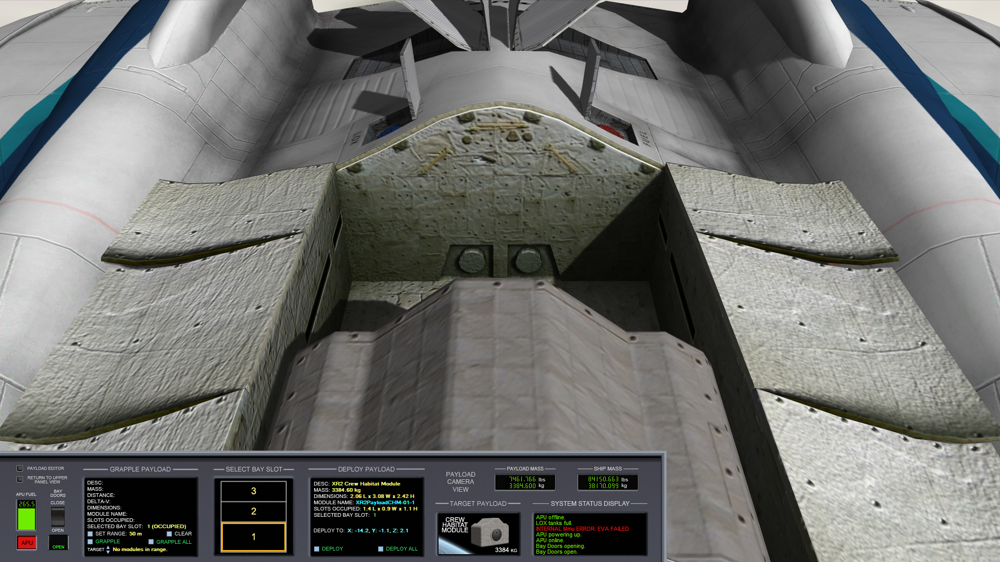

XR2の操作
XR2 Ravenstarのシステムと、その操作について説明します。
2Dコクピットと操作パネル
3Dコクピットのボタン操作は実装されていない。
キーボードF8を押して、2Dコクピットに切り替える。
Ctrlキーを押しながら矢印キーを押す。
上下のパネルにアクセスできる。
ウィンドウ解像度
ゲームウィンドウの解像度（≒大きさ）によって、パネルのレイアウトが変更される。
目当てのボタンが見当たらないときは、上下のパネルに移動して探す。
APU（補助動力装置）
油圧系統を駆動するためのエンジンをAPUという。
これを起動しないと、動翼・エアロック・ラジエータが作動しない。
APUは専用の燃料を必要とし、起動中は常に燃料を消費する。
燃料切れになると動作しなくなるので、必要に応じて起動・停止する。
APUと書かれた赤いボタンを押して、起動・停止する。
ダメージ判定
機体が被ったダメージに応じて、乗組員も負傷・死亡する。
乗員がすべて死亡すると操縦不能になる。※
※破損状況によっては、別の船から乗り込んで再起動することもできる現行バージョンでは不可
COOLANT TEMP（冷却材の温度）
温度が危険域を超えると、メインコンピュータがシャットダウンする。
これに伴って、生命維持装置が停止、乗員が酸欠死する。
地上およびドッキング中は、EXTERNAL COOLINGを使う。
ボタンを押してONにする。同時に酸素も補給される。
宇宙空間ではRADIATORを展開する。
ボタンを押してDEPLOYにする。
再突入時にはSTOWに戻しておく。
| EXTERNAL COOLING | 外部冷却システム |
| RADIATOR | ラジエータ （放熱板） |
| DEPLOY | 展開 |
| STOW | 収納 |
船体外壁の温度
キーボードの3を押すと、MDAに表示される。
赤より上が危険域。放置すると、船体が損傷して乗員が焼死する。
打ち上げ、大気圏突入のいずれにおいても「高度を上げる」「速度を落とす」ことで温度を下げられる。
衝撃
落下の衝撃などによって、船体が損傷したり、乗員が負傷・死亡したりする。
2Dパネルの左下に、着陸時のVS（降下率）の目安が記載されている。
この数字を超えないように、Surface MFDで確認しつつ着陸する。

| 燃料 | 積荷 | 最大VS | |
|---|---|---|---|
| FULL LOAD | 100% | 100% | 2.8 [m/s] |
| TYPICAL LOAD | 33% | 75% | 4.2 [m/s] |
酸素
XR2には、初期状態で14人が乗っている。
彼らは酸素を消費し、酸素残量がゼロになると死亡する。
左下の青い棒グラフが酸素残量。
右上が乗組員の人数から計算される残り日数。
地上では、エアロックを開放するか、EXTERNAL COOLINGを起動しておけば、補充の必要はない。
宇宙ステーションとのドッキング中は、エアロックを開放するのと同じ効果がある。
火星などへの長距離飛行の場合は、Payload Editorを使って、酸素タンクを増設することができる。
空気抵抗
車輪などが露出したままになっていると、大気圏内を飛行中に破損することがある。
警告が出たら減速する。必要ないものは収納する。
主翼荷重
急な旋回によって主翼に大きな負荷がかかると、損傷して操縦不能になることがある。
wing stressの警告が出たらゆるく旋回する。
スクラムジェットエンジン
打ち上げ時にスクラムジェットエンジンを使用すると、推進剤を節約できる。
メインエンジンでマッハ3.5まで加速。
SCRAM DOORSをOPENにする。
スクラムジェットを全開にする。
SCRAMのレバーをマウスでドラッグする。
スクラムジェットを点火したら、メインエンジンを停止する。
船体温度を確認しつつ加速。
危険域に達したら高度を上げる。
燃料が尽きるか、エンジン温度が危険域に到達したら、スクラムジェットエンジンを停止する。
SCRAM DOORSをCLOSEにしてから、メインエンジンに切り換える。
MDAとオートパイロット
パネル中央の小さな画面をMDAという。
キーボードの数字キーで機能を切り換える。
| 1 | 降下率を維持・自動着陸 |
| 2 | 機体の姿勢を維持 |
| 3 | 船体外壁および冷却材の温度 |
| 45678 | 機体の破損状況を確認 |
| 9 | 再突入チェックリスト |
| 0 | 対気速度を維持 |
120はオートパイロット。
DESCENT HOLD AUTOPILOT
ホバーエンジンを制御する。
キーボードで1を押す。
HOVER DOORSがOPENになっていないと使えない。
Engageをクリックして起動する。
もしくは、キーボードでAを押す。
初期状態だと高度を維持しようとする。
右のSET RATEの▲ボタンをクリック。
上昇・降下率を設定する。
AUTO-LANDをクリックすると、現在の位置で自動着陸する。
RCSやメインエンジンを使って、降りたい位置に移動する。
ATTITUDE HOLD AUTOPILOT
迎え角と左右への傾き（ロール角）を制御する。
キーボードで2を押す。
Engageをクリックして起動する。
もしくは、キーボードでLを押す。
操作はRCS ROTと同じ。
テンキー2or8、4or6を押して操作する。
AeroBrake MFDと組み合わせて、再突入を補助することができる。
AIRSPEED HOLD AUTOPILOT
大気圏内で巡航速度を維持する。
キーボードで0を押す。
Engageをクリックして起動する。
もしくは、キーボードでAlt+Sを押す。
右のSET AIRSPEEDの▲ボタンをクリック。
巡航速度を設定する。
現在の対気速度を維持することもできる。
テンキーEnterを押す。
燃料・酸素の補給
着陸時・宇宙ステーションへのドッキング中に、燃料・酸素を補給できる。
Ctrl+↓を押して、下のパネルに移動する。
右側のボタンをクリック。
FUEL HATCHとLOX HATCHをOPENにする。
EXTERNAL LINE PRESSUREを確認する。
左下のEXTERNAL SUPPLY LINESをOPENにする。
燃料および酸素タンクが充填される。
X-FEEDのノブをクリックすると、メインエンジン・RCSの燃料を移すことができる。
燃料計の下、FUEL DUMPを長押しクリックすると、燃料を機外に排出する。
| FUEL HATCH | 燃料ハッチ |
| LOX HATCH | 液体酸素ハッチ |
| EXTERNAL LINE PRESSURE | 補給ラインの圧力 |
| EXTERNAL SUPPLY LINES | 外部補給ライン |
乗員の管理
2021年4月現在、XR2には宇宙飛行士が実装されていない。
以下はOrbiter2010版での内容だが、2010対応版は公開終了になっている。
XR2はUMMU（Orbiterに宇宙飛行士を追加するMOD）に対応している。
UMMUが最低でも1人は乗っていないと動かない。
船外に降りる・ドッキング
以下の手順で宇宙飛行士を船外に降ろすことができる。
ノーズコーン(NOSE CONE)とエアロック（OUTER DOORとINNER DOORの両方）をOPENにする。
EVAのボタンをクリック。

UMMUに対応しているほかの宇宙船やステーションとのドッキング中なら、UMMUは相手の船に移乗する。
機内に戻るときは、エアロックに十分近づいてからキーボードでEを押す。
DEPLOY TURBOPACKのボタンをクリックすると、機体前方にターボパックを放出する。
STOW ALLのボタンをクリックすると、近くにあるターボパックを回収する。
EVA（宇宙での船外活動）
宇宙空間や、地球以外の惑星でEVAをおこなう場合は、地球上とは手順が少し異なる。
まず、APUを起動しておく。
次に、上にCHAMBERと書かれたボタンを押してEVACUATE（減圧）にする。
（エアロック内の空気を抜いて、宇宙空間との気圧差を解消する）
NOSE CONEとOUTER DOORをOPENにする。
これらの手順を踏まないと、エアロックが開かないようになっている。
ペイロードの管理
酸素タンクや燃料タンクなどを増設できる。
これによって航続距離を延ばすことが可能。
以下の手順で、ペイロードの管理画面を開く。
- F8キーを押して2Dコクピットにする。
- Ctrlを押しながら、十字キーの↑を押す。
- Ctrlを押しながら、十字キーの←を押す。

APUを起動して、BAY DOORSをOPENにする。
格納庫のドアが開く。
| GRAPPLE | 機体周辺のペイロードを搭載 |
|---|---|
| DEPLOY | 現在のペイロードを放出 |
パネル左上のPAYLOAD EDITORの小さなボタンを押す。
このウィンドウでペイロードを追加する。
- プルダウンメニューから搭載したいものを選択する。
- Payload Bayの番号をクリック。
- 指定した場所にコンテナが追加される。
Empty Bayをクリックすると、コンテナが削除される。
Doneをクリックすると終了する。
LOXが液体酸素、FUELが燃料。
搭載位置によって使用可能なコンテナの大きさが制限される。
また、XR5のコンテナをXR2で使用することはできない。